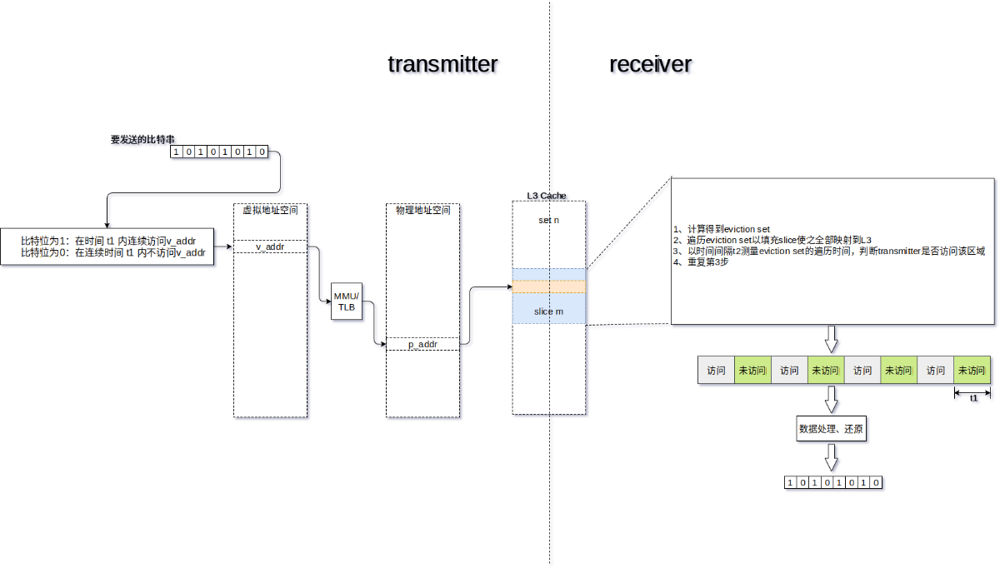
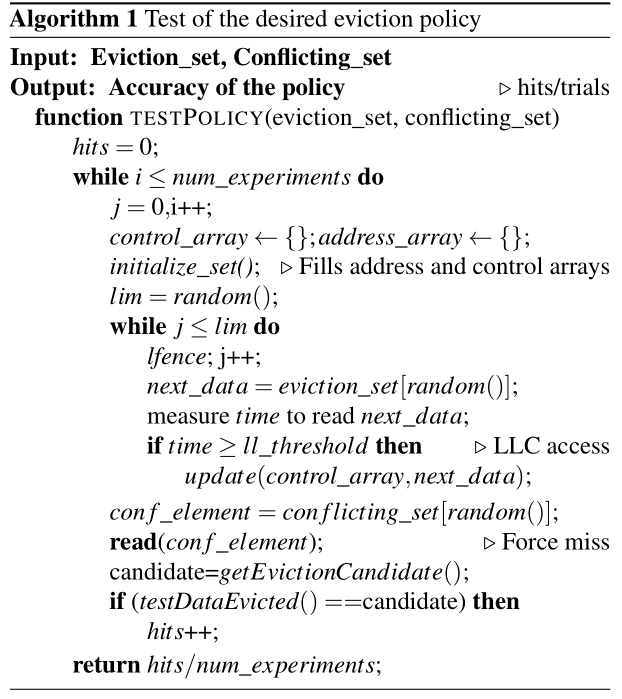
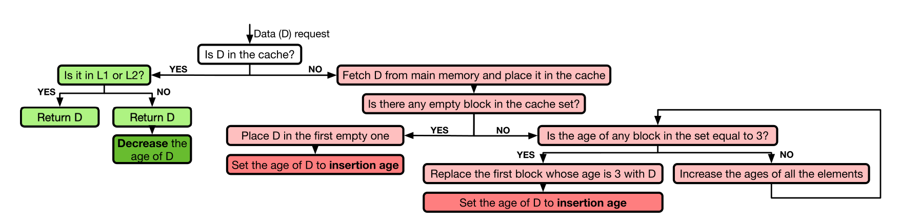
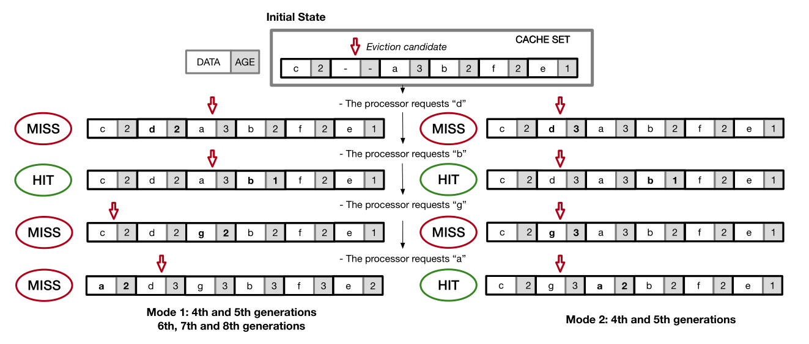
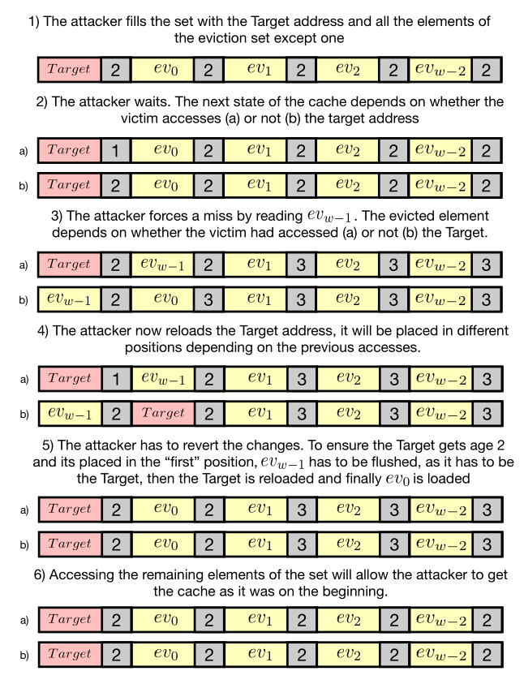
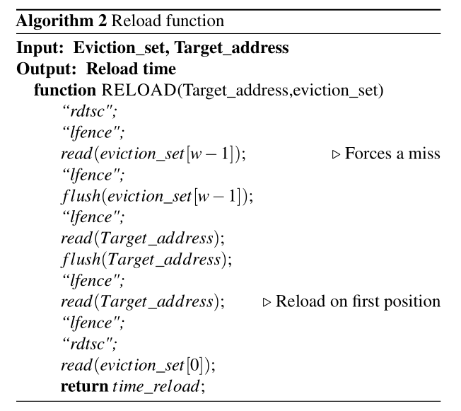
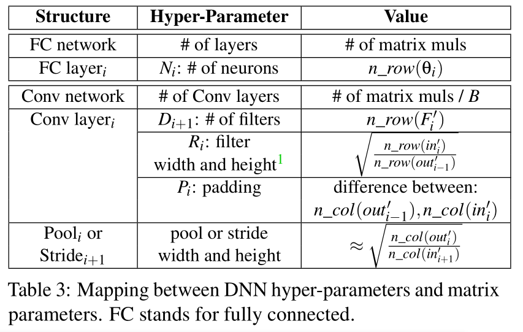
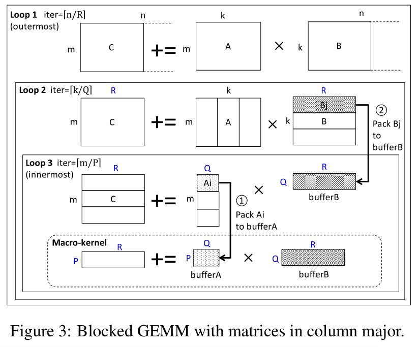
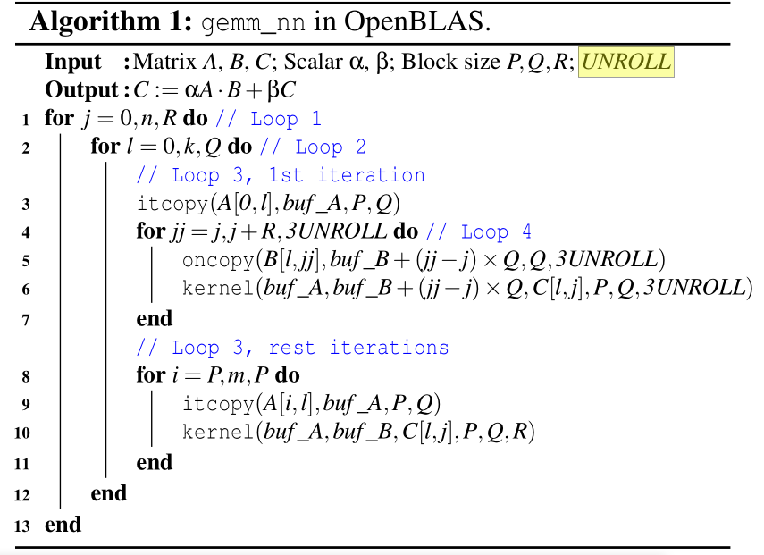
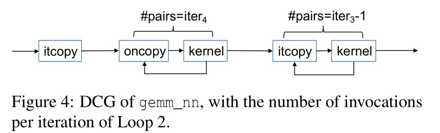

Side Channel*
Session of USENIX 2020
RELOAD+REFRESH*
Abusing Cache Replacement Policies to Perform Stealthy Cachce Attacks*
摘要*
缓存攻击检测主要依赖于：如果不改变 cache 状态并驱逐被观测进程的 cache 内容，就无法实现缓存攻击。
巧妙地使用 cache 替换策略，就可以跟踪受害者进程的缓存访问而不必强制驱逐受害者数据。
提出了恢复处理器缓存替换策略的方法论。
Introduction*
任何依赖于 secret 生成的缓存利用都可能被攻击。
硬件防护未部署，系统层防护影响性能。
对用户来说唯一看上去可行的方法就是检测攻击。
使用硬件性能计数器 Hardware Performance Counter HPC 检测正在进行的微架构攻击。
HPC 包括现代处理器中的寄存器，监控硬件事件，像 cache miss。
检测的前提是攻击对受害者产生了可测量的影响。
本文描述了一种攻击方法，实现从受害者处获取信息的同时保持受害者数据在 cache 中，因此不会显著影响受害者行为，检测更难。
Contribution*
- 引入测试现代处理器不同的缓存替换策略的方法论
- 揭示了 4-8 代 intel CPU 使用的缓存替换策略
- 扩展了对现代缓存的理解，为改进传统的缓存攻击奠定基础
- 提出 RELOAD+REFRESH，利用 intel 缓存替换策略实现根据受害者的内存访问获取信息
- 提出的攻击对受害者仅造成了可忽略的 cache miss，使得无法被当前的防护措施检测到。
Background and related work*
Cache 架构*
low level, L1 and L2
Last Level Cache, LLC L3
intel 的 LLC 是分成若干 slice，由环形总线互连。每个元素的物理地址通过一个复杂的函数映射到 slice 中。
L3 通常是 inclusive 的，容易保持缓存一致性。
Skylake Server 结构使用了 non-inclusive 的 LLC。
cache 是 w 路组相联，由 S 个 set，每个 set 是有 w 个 line，一个 line 是 64 bytes。
物理地址分为 line 内偏移，低 6 位；set index，log_2S 位；tag 剩余的位。
Cache replacement policies*
cache 满的时候决定那个元素要被逐出（写回内存）
常规的策略：
- FIFO，LRU，NRU(LRU approximation)，LFU，CLOCK，pseudo-random
- LRU 类的策略对于工作集大于缓存大小的内存密集型工作或扫描（一次性突发请求）表现不佳
- 适应工作负载变化的自适应算法
- ARC: LRU & LFU
- CAR: LFU & CLOCK
保持逐出策略的同时修改插入策略也可以提高性能。
- LRU Insertion Policy
- BIP, Bimodal 有时候插入到 MRU 位置
- DIP，动态选择，看哪个造成的 cache miss 少
利用 Re-reference Interval Prediction 的替换算法，每个 line 使用 2 bits，预测是否会被 re-referenced。需要替换时会逐出预测的最长间隔的 line，提出了 Static 和 Bimodal 两种，使用 set dueling 来决定哪个策略适合。
intel 处理器，cache 替换策略称为 Quad-Age LRU 没有公开文档。
逆向处理器 cache 策略的工作都是执行不同的内存访问序列，通过估算或测量 cache miss 来比较。但是他们没有解释缓存中的哪些具体元素会被换出。
本文是首个全面描述现代 intel 处理器上实现的缓存替换策略，我们可以通过访问序列的信息准确确定 set 中的哪个元素会被换出。
缓存攻击*
缓存攻击通过监控缓存利用（hit 和 miss 的序列）还恢复受害者信息。
当软件的内存访问模式是由 secret 决定时，攻击者就可以推断出敏感数据。
传统的缓存攻击主要有几类：
- FLUSH+RELOAD
- PRIME+PROBE
- EVICT+TIME
前两个及其变体分辨率较高。
缓存攻击都是针对 LLC 的，基本都是三部分：
- initialization 攻击者准备缓存内容
- waiting 等待受害者执行
- recovering 攻击者通过缓存状态恢复信息
FLUSH+RELOAD*
依赖于共享内存，需要 memory deduplication 开启。
用 clflush 去掉 target lines，等待受害者执行，最后测量之前 flushed 数据的 reload 时间。时间短就说明受害者访问了，因为又被换入了 cache。
FLUSH+FLUSH 通过 clflush 时间来判断，避免访问缓存。
PRIME+PROBE*
不知道操作系统测信，理论上可以可应用到所有系统，还可以从动态分配数据回复信息。
先用攻击者自己的数据填充到受害者数据所在的 cache，然后等待，最后 probe 需要的 set，通过时间变化找到受害者行为。
通过限制计时器访问或者加入计时噪音防御，变体 PRIME+ABORT 可以克服（使用 TSX）。

恢复 Intel 缓存逐出策略*
软件模拟硬件。
使用自己的数据填充一个 set，访问这个数据然后触发一个需要的 cache miss，观察哪个元素被逐出。
需要构造一个驱逐集（w 路组相联中，找到 w 个不同的地址，这些地址都映射到同一个特定的 set）和一个冲突集（另一个驱逐集，映射到同一个 set，地址不同）。
前人的工作已经恢复了地址映射函数，或者描述了如何构造驱逐集。
当 N_{core} = 2^n 时，就可以使用 hash func 计算 set 和 slice 号，其他情况可以直接构造驱逐集。
要注意的是，访问顺序对推断逐出策略非常重要，因此我们使用 lfence 充当一个屏障，确保实际的内存访问顺序是顺序的。以防止乱序执行
实验设计如下：

先确定，当缓存有空间的时候不会逐出数据。先用驱逐集填充一个 set，然后随机 flush 掉一个 line，然后填入冲突集中的一个 line，这时候 set 里得应该就是 驱逐集 w-1 个外加冲突集的一个，测量访问驱逐集那 w-1 个的时间就可以确定它们都还在 cache 里，而冲突集的那个是被加载到 flush 掉的那个位置。
恢复替换策略的过程就是将实际的数据演化过程与各种策略的理论过程进行比较。
使用两个 w 大的数组 address_array 模拟研究的那个 set，用来存这个 set 里数据的地址。control_array 是决定哪个地址要被逐出的控制位。需要实现函数，更新 address_array, control_array 以及给出逐出的候选地址。这些都基于测试的替换策略实现。
initialize_set 都是确保测试的 set 是空的，先 fill 然后 flush all。address_array 包括驱逐集的地址以及初始化的控制位。
以测试 NRU 为例。每个 line 使用一个 bit 作为控制位，当访问时置位，如果某次置位使得所有的控制位都为 1，则全部清零。冲突时，NRU 会逐出第一个控制位为 0 的。所以实验中的 control_array 的可能值就是 -1, 0, 1。通过 testDataEvicted 测试逐出的是否是 NRU 预测的元素（即 getEvictionCandidate 的返回值）。
结论*
最后测试发现，不同的处理器虽然缓存插入的策略有所不同，但是缓存替换的策略都是相同的。
即 Quad-Age LRU，如下图，检索到就 decrease，先淘汰 age=3 的，插入的时候设定一个初始的 age。没有 age=3 的就全体递增，从头开始淘汰。

各个机器上只是在插入的 age 初始值不同。4 5 代的有 mode1=2, mode2=3，而之后的都是 mode1=2
以下是 cache 的模拟流程

RELOAD+REFRESH*
有了共享机制，如果攻击者知道了替换策略，那么他就可以把受害者可能用到的数据 target 放到 cache 某个 set 的特定位置。而 set 中数据的位置和 age 都是可以通过访问顺序控制的，进而又能够确定特定的替换候选，那么攻击者就可以把 target 设置为候选。如果受害者使用了 target，那么它的 age 减小，就不再是候选。攻击者可以强制制造一个 cache miss，然后检查 target 是否还在 cache 中。如果还在，说明受害者访问了，攻击者也就得到了想要的信息。同时受害者是从 cache 里访问的，也没有触发 cache miss。这就是 RELOAD+REFRESH。
linux 使用了 kernel same-page merging 提高内存的利用率。攻击者需要先通过逆向获取想要监控的地址，还需要构造与其映射到同一 set 上的驱逐集。
下图描述了攻击的步骤以及 cache 可能的状态。

首先插入把 target 插入到第一个，然后把驱逐集里的 w-1 个都填充到后面。剩下的一个用来触发冲突。因为低级的 cache 路数要小于 LLC，当填充后面元素的时候会把 target 从低级 cache 里替换掉。
这样之后 target 就变成了逐出的候选。然后攻击者等待受害者执行。如果受害者访问了 target，那么 set 里的第二个元素就变成了逐出候选。如果没访问，target 还是候选。然后攻击者访问驱逐集剩下的那个来触发冲突，就会替换掉候选。然后再访问 target，时间短就说明 target 没被替换，即受害者访问了 target。然后需要通过 REFRESH 将 cache 恢复到初始状态，把触发冲突的那个再从 cache中换出来，用于下一轮。
而当 cache 使用 mode2=3 时，前几步都相同，最后是需要判断攻击者和受害者是否在同一个 core 上。如果不在，那么其他元素 age=3，target 还是候选，就不需要 refresh 了。另一方面，如果是在同一个核，就需要 refresh，因为 target 在低级缓存里还存在。而 reload 的时间可以判断受害者和攻击者是否在同一个 core 上。
另外，mode2=3 不需要共享内存就可以进行可检测的快速跨核心 cache 攻击。攻击者用自己的数据填充 set，所有的 age=3，候选就是第一个。如果受害者使用了数据，那么候选就被替换。而受害者之后使用这个数据都会从低级缓存中取，则 L3 cache 中的 age 不变。那么攻击者只需要访问第一个元素就可以知道受害者是否访问 target。

以上为 RELOAD+REFRESH 的步骤。
先填充 target 和 w-1 个驱逐集元素，然后等待受害者执行，最后执行 RELOAD 和 REFRESH 步骤。
RELOAD 得到受害者访问的信息，REFRESH 用来做好恢复信息的准备。
RELOAD 不需要 flush target，除非受害者不访问。而为了避免用 if，就直接 flush。时间短意味着受害者访问。
REFRESH 的代码是针对 12 路组相联的，因为 target 和驱逐集的第一个元素已经在 cache 里了，限制只需要把剩下的元素的 age 减到 2 就行了。为了避免乱序执行，使用了链表的方式访问这些数据。这个函数就行 PRIME+PROBE 里的 probe 截断。refresh 的时间还可以用来检测是否又其他的进程在用这个set。
Noise*
攻击依赖于元素插入到 cache set 的时间以达到对受害者避免 cache miss，对攻击者可以知晓 target 是否被访问。如果其他的进程使用了映射在同一个 cache slice 的数据，那么攻击的效率会降低，还可能会触发一些检测机制。
前面提到 refresh 步骤的时间可以用来判断是否存在有其他进程访问这个 set 的情况。攻击者可以稍微改一下方式。如果产生噪声的进程仅使用了一个地址，那么攻击者可以轻松处理，规避检测同时获取信息。诀窍就是把 target 放在 set 的另一个位置，比如就第二个。如果别人用到了映射到这个 set 的任何一个数据，那么被替换的数据就是 set 中的第一个数据了。当攻击者触发冲突时，候选就还是 target（受害者访问 target）或者第三个元素。通过 reload 获取信息，然后必须从第三个元素开始 refresh，把 noise 逐出 cache。
与之前的方法比较*
Covert Channel 隐蔽通道*
为了研究这个攻击的分辨率，将其与以前的两种攻击比较。我们用类似的方法在两个进程之间构造了一个隐蔽通道。
sender 通过访问共享库内存地址传输 1，不访问传输 0。一旦访问了内存位置，等待固定时间，再次读取数据。receiver 通过上述的技术监控缓存的利用确定传输的是 0 还是 1。
PRIME+PROBE 攻击按照不同的方式进行。不适用避免替换策略变化的 zig-zag 模式。使用这种方式会增加误报数量，因为有时无法从 cache 中删除数据。我们以相同的顺序访问 w 大小的驱逐集，元素以链表形式访问。如果缓存的初始状态已知，这意味着我们最多需要 2 次 probe 来从cache 中驱逐数据，防止对目标的访问发生在探测截断的中间。
Cache Telepathy*
Leveraging Shared Resource Attacks to Learn DNN Architectures*
Abstract*
DNN 引起良好的精度得以迅速普及。一个 DNN 的架构（超参数）决定了它的准确率和性能，通常是保密的。攻击云中的 DNN 而获取其架构具有潜在的商业价值。
本文提出了 Cache Telepathy，利用缓存侧信道获取 DNN 架构的有效机制。攻击基于 DNN 的推理很大程度上依赖于 tiled GEMM，DNN 的架构参数决定了 GEMM 的调用数量和矩阵维数。这些都可以从缓存侧信道泄露。
使用 Prime+Probe 和 Flush+Reload 攻击运行在 OpenBLAS 和 Intel MKL 库的 VGG 和 ResNet DNN。VGG-16 搜索空间从 5.4 \times 10^{12} 减到 16，ResNet-50 从 6\times 10^{46} 减到 512。
Introduction*
MLaaS，提供 DNN 的基础设施。可信客户像 MLaas 服务提供商提交 DNN 或训练数据，服务提供商托管 DNN，允许源程的非可信用户提交 DNN 查询并收费。攻击者在现代 CPU 上通过缓存侧信道攻击获取云上 DNN 的参数信息。
Contribution*
- 分析 DNN 超参数与 GEMM 调用及其参数的映射关系
- 实现了第一次使用缓存侧信道攻击来提取 CPU 上的 DNN 架构
- 评估了对 VGG 和 ResNet DNN 的攻击
Background*
DNN*
深度神经网络 DNN 是一种 ML 算法，使用了多层非线性处理单元进行特征提取和转换。主要有全连接神经网络（多层感知器）和 CNN。
DNN 架构，即 超参数，给定了网络结构：
- 层数
- 层类型，全连接、卷积、池
- 层之间的连接，包括顺序和非顺序连接。非顺序的可能是把前两层的输出相加作为下一层的输入。
- 每层的超参数，每层的神经元数，过滤器数量、大小、步长。
- 每层的激活函数
每层 DNN 的计算都涉及到对输入神经元的乘积累加 multiply-accumulate，DNN 权重用来指定运算此属。全连接的层中，每条边就是一个带权值的 MACC，卷积层的每个过滤器就是一个多维的权重数组。用作滑动窗口计算神经元点积。
DNN 训练阶段就是从网络结构和训练集开始，试图找到 DNN 的权值以最小化预测误差。训练在 GPU 上进行，而推理阶段一般就在 CPU 上进行。
以往的隐私攻击都需要 DNN 架构*
主要有三种 DNN 的隐私攻击，目标不同，都需要知道 DNN 结构。
- 模型提取攻击，攻击者想要获取与原网络足够相近的网络。开始知道 DNN 结构，创建一个合成的数据集，从原网络请求分类结果，使用这些结果用原结构训练出网络。
- 成员推断攻击，推理原训练集的组成，数据样本在训练集中的概率。也需要知道 DNN 结构，创建多个合成数据集，根据这个结构训练出多个网络，在这些网络上运行推理，其中一些输入是在训练集中，一些不在。然后比较结果找出训练集中的数据输出的模式。这些信息用于推断原训练集的组成。特别的，给定一个数据样本，它们在原网络上推理，获取输出查看这个输出是否与之前获得的模式匹配，越匹配就说明越有可能存在于原训练集。
- 超参数窃取攻击，窃取 ML 算法中使用的损失函数和正则化项。先通过模型提取攻击获取 DNN 权值，然后找到最小化训练预测始误的损失函数。
基于缓存的侧信道攻击*
- Flush+Reload 要求攻击者与受害者共享敏感数据，可以通过页面重复数据消除技术 page de-duplication 实现。flush → wait → reload
- Prime+Probe 不要求页共享。构造冲突地址集（驱逐集）。先填充驱逐集到 cache，wait，最后 probe，判断受害者是否访问了 line。
威胁模型*
缓存计时攻击以快速减小 DNN 结构的搜索空间，依赖于以下的假设。
- 黑盒执行，黑河攻击中，攻击者只能通过官方查询接口访问 DNN。攻击者实现不知道 DNN，包括超参数、权重和训练集。
- 假设攻击者进程可以使用现有的一些技术与运行 DNN 推理的受害者进程定位到同一个处理器芯片上。现在的 MLaaS 允许用户上传自己的代码进行训练和推理。攻击者可以将自己伪装成 MLaaS 进程，而云调度程序很难区分。
- 攻击者可以分析受害者使用的 ML 框架和线性代数库。
攻击概览*
Cache Telepathy 的目标就是大幅减小目标 DNN 架构的搜索空间。先讨论攻击如何帮助其他的 DNN 隐私攻击，然后概述攻击过程。
为其他攻击提供基本的初始化步骤。
攻击基于两点：
- 首先，DNN 推理严重依赖 GEMM。分析了 GEMM 在 ML 框架中的应用，给出了 DNN 超参数与矩阵参数之间的映射关系。
- 其次，高性能的 GEMM 算法易受缓存侧信道攻击，因为它们都是通过矩阵 tiling 在缓存层次进行调整。也就是把矩阵分块，避免 cache conflict。当分块大小公开或者容易推断时，攻击者可以利用缓存侧信道计算块数从而知道矩阵维度。
Cache Telepathy 包括缓存攻击和后续处理步骤。首先通过缓存攻击监控矩阵乘法获取矩阵参数。然后基于 DNN 超参数与矩阵参数的映射关系逆向 DNN 架构。最后对剩余未发现超参数的可能值剪枝，生成一个搜索空间。如果我们生成合理数量的候选结构，其超参数与原网络相同或相似，则攻击成功。
将 DNN 映射到矩阵参数*
DNN 超参数如何映射到矩阵参数。对于顺序连接的 DNN。
经过一顿分析，得到下表：

看不懂就直接跳过了，直接看攻击构造部分。
攻击矩阵乘法*
设计侧信道攻击来获取矩阵乘法参数。
先分析最近的 BLAS 库，这些库都优化了分块矩阵乘法。介绍如何从 OpenBLAS 的 GEMM 实现获取信息，然后再以 MKL 为例推广到其他库。
分析 OpenBLAS*
gemm_nn 计算 C=\alpha A\cdot B + \beta C，维度分别为 [m,k], [k, n], [m,n]。目的就是提取 m, n, k
针对现代的多级缓存层次结构进行优化，使用 Goto's 算法，如下图。

底部的宏内核执行基本操作，将矩阵 A 中的 [P, Q] 块与 B 中的 [Q, R] 块相乘。用汇编写的，通过考虑 CPU 管道结构和寄存器可用性进行优化。块大小使得 A 的 [P, Q] 适合 L2 cache，[Q, R] 适合 L3 cache。
三层循环，三个循环遍历。

内层通过展开循环加速。
定位探测地址*
要知道 m, n, k，首先要知道上面四个循环的遍历值，然后用两个公式来算。
我们知道 P, Q, R, UNROLL，开源代码里都有。
使用 itcopy, oncopy, kernel 函数的地址作为探索地址。

提取矩阵维度的过程*
通过计算 DCG, Dynamic Call Graph 提取矩阵维度
GEMM 攻击的推广*
攻击可以推广到其他的 BLAS 库，因为都用了分块矩阵乘。
环境配置*
攻击实施，使用 F+R 和 P+P，攻击者和受害者在不同的物理核上，共享 LLC。
在 F+R 中，攻击者和受害者t通过 page de-duplication 共享 BLAS 库。攻击者探测 itcopy 和 oncopy 中的地址。根据模型，并不需要探测 kernel 函数的地址。
P+P 攻击 LLC，构造两个冲突集，都是每 2000 周期探测。